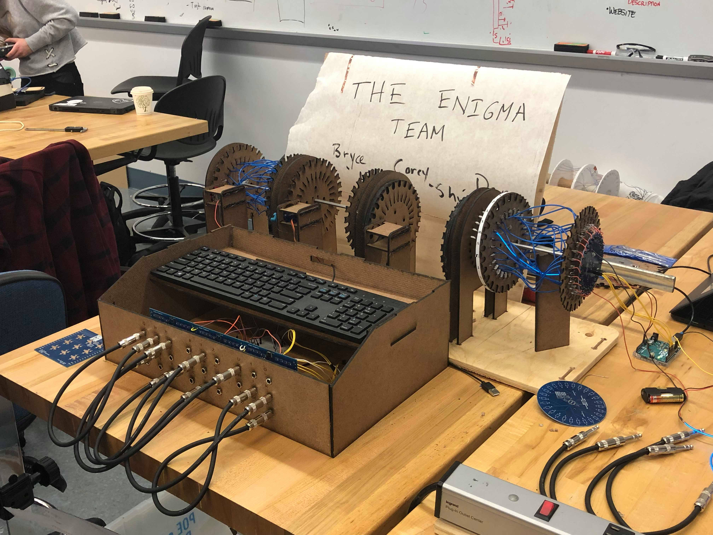

Enigma
Our Process
Watch our project grow from an initial sketch into a functioning product.
Sprint 1
And so it begins After looking at each of our potential project ideas, we discussed the design of an Enigma machine visualization which, like the EL wire it featured, sparked an interest in us all. We began Sprint 1 with the intention of developing a learning experience that would represent the Enigma machine in an authentic visual display while allowing us to create a truly breathtaking final product. During the first sprint we set out to create a proof of concept by testing materials like EL wire and electrical contacts, rapid prototyping mechanical designs for stepping rotors, and simple software integration to power our servo motors. By the end of the sprint, we had a fully integrated first pass at the system in which keyboard input was passed through the Rasberry Pi to the Arduino which gave motor commands to the servo which stepped a rotor disc to establish contact between two segments of EL wire which then lit up. While we didn’t fully wire up either rotor, the overall success we had in this sprint left us eager for more.
After looking at each of our potential project ideas, we discussed the design of an Enigma machine visualization which, like the EL wire it featured, sparked an interest in us all. We began Sprint 1 with the intention of developing a learning experience that would represent the Enigma machine in an authentic visual display while allowing us to create a truly breathtaking final product. During the first sprint we set out to create a proof of concept by testing materials like EL wire and electrical contacts, rapid prototyping mechanical designs for stepping rotors, and simple software integration to power our servo motors. By the end of the sprint, we had a fully integrated first pass at the system in which keyboard input was passed through the Rasberry Pi to the Arduino which gave motor commands to the servo which stepped a rotor disc to establish contact between two segments of EL wire which then lit up. While we didn’t fully wire up either rotor, the overall success we had in this sprint left us eager for more.
Retro 1
Our team did Plus/Delta sticky-note sessions to review what went well and poorly after each sprint.
Pluses
- Passion for project +4
- Good Team Chemistry +3
- Successful Sprint + 3
- Accomplishing goals and tasks +1
- RasPi and Py-Enigma were easy to use
- Good Presentation
- On the same page
Deltas
- Documentation +2
- Team Bonding +2
- Team and Mental Health Check-Ins +2
- Establish Weekly Meeting Time +1
- More Prototyping +1
- Straying Focus
- More Snacks
During our first team retrospective, we found that everyone was very excited about the project but that we were lacking some structure as a team. To fix this moving forward, we decided to put an emphasis on improving our team communication over the next two weeks.
Sprint 2
Setbacks lead to progress
 Upon presenting our work from the first sprint, we immediately received feedback expressing concerns about the safety of our machine. Though each of us had gotten shocked, we hadn’t fully considered the perils of 208 exposed contacts with 150 volts of AC current running through them. Needless to say this necessitated a full mechanical redesign to incorporate safety features like hiding the contacts and limiting possible exposure. In the midst of this redesign we also realized the limits of a $250 budget. After adding up our ideal component and material prices, we quickly realized how far we would exceed our budget by continuing down the road we were on. Once again, we decided to halt and evaluate possible ways of redesigning our product to maximize its explanatory power of the Enigma machine, while also not straying too far from our budget. Mitigating the safety and budget risks took most of our time and energy this sprint, but we were able to generate exciting new designs for housing and a plugboard component, another fascinating feature of the original Enigma machine we wanted to explain. By the end of this sprint, we didn’t have a lot to present, but we had learned about some of the more difficult aspects of designing for manufacturing.
Upon presenting our work from the first sprint, we immediately received feedback expressing concerns about the safety of our machine. Though each of us had gotten shocked, we hadn’t fully considered the perils of 208 exposed contacts with 150 volts of AC current running through them. Needless to say this necessitated a full mechanical redesign to incorporate safety features like hiding the contacts and limiting possible exposure. In the midst of this redesign we also realized the limits of a $250 budget. After adding up our ideal component and material prices, we quickly realized how far we would exceed our budget by continuing down the road we were on. Once again, we decided to halt and evaluate possible ways of redesigning our product to maximize its explanatory power of the Enigma machine, while also not straying too far from our budget. Mitigating the safety and budget risks took most of our time and energy this sprint, but we were able to generate exciting new designs for housing and a plugboard component, another fascinating feature of the original Enigma machine we wanted to explain. By the end of this sprint, we didn’t have a lot to present, but we had learned about some of the more difficult aspects of designing for manufacturing.
Retro 2
These are the results from our second Plus/Delta sticky-note review session.
Pluses
- Team bonding, movie watching +2
- Team and mental health checkins +2
- Plugboard progress +1
- Good handling of challenges +1
- Better communication within team +1
- Snacks
- Team meetings were smoother and more organized
- Good push beyond MVP
- Good presentation
- Website started
- Good utilization of ninjas/professors
Deltas
- Dealing with Safety concerns +2
- Dealing with Budget concerns +2
- Lack of mechanical and software deliverables +1
- Verbal response in person is lacking +1
- Not efficiently using in person meetings +1
- More team bonding
- Contacts keep changing
- Poor communication of expectations and deliverables
- End isn’t really in sight
During our second retrospective, we were overall very proud of how we handled the many new challenges we faced during the sprint. We also saw a significant improvement in our communication and team dynamic thanks to the addition of team bonding and team health check-ins. We also had some similar themes in the deltas about poor verbal communication during meetings and unclear expectations. During the next two weeks we set a goal of improving as a team by planning ahead.
Sprint 3
Let there be light
 Feeling a little behind in the wake of Sprint 2 setbacks, we set out on a mission to consistently establish contact between fully wired rotors. It didn’t happen as early in the sprint as we would have liked as we had shipping issues with the cheaper contact components we had specced in Sprint 2, but once we had the components in hand, we were able to test three different methods of establishing electrical contact, choose the best one and create a semi-complete rotor that displayed the contact in action. We also made significant headway on other aspects of our visualization. We redesigned the stepping mechanism to increase the accuracy of our motion with a Geneva drive. We also assembled our own plugboard wires from audio jacks and aux cables and began populating the plugboard PCBs. We also had time to dive into our website design and a preliminary design for the PCB that would power our EL wire. By the end of this sprint, we had quite a laundry list of completed components, but were still looking forward to the next sprint before we could see it all come together.
Feeling a little behind in the wake of Sprint 2 setbacks, we set out on a mission to consistently establish contact between fully wired rotors. It didn’t happen as early in the sprint as we would have liked as we had shipping issues with the cheaper contact components we had specced in Sprint 2, but once we had the components in hand, we were able to test three different methods of establishing electrical contact, choose the best one and create a semi-complete rotor that displayed the contact in action. We also made significant headway on other aspects of our visualization. We redesigned the stepping mechanism to increase the accuracy of our motion with a Geneva drive. We also assembled our own plugboard wires from audio jacks and aux cables and began populating the plugboard PCBs. We also had time to dive into our website design and a preliminary design for the PCB that would power our EL wire. By the end of this sprint, we had quite a laundry list of completed components, but were still looking forward to the next sprint before we could see it all come together.
Retro 3
After our third sprint, we did another Plus/Delta sticky-note review session to reflect and ideate on ways to improve.
Pluses
- MVP +2
- Website progress on content
- Communication +3
- Snacks +3
- More progress than sprint 2
- Team bonding
- Productive meetings +2
- Stripping Jokes +1
- Made mechanical system
- Made it happen in the end
- Good team dynamic +1
- Handling stress of all nighter +1
- Corey-B interactions
- Photo Documentation
- Consistent contact +2
- On a roll +1
- Plugboard
- Mux works
Deltas
- Time management
- All nighter
- Last minute binge of work
- More careful
- Team bonding
- Scheduling +2
- Setting hard deliverables
- Battery contacts delayed +1
- Didn’t add to website
- No software done yet
- Breakfast meetings
- Written Documentation
- Too much to do on last night
- No time to actually edit mechanical system
- Too much solidworks
By our third retrospective, we had gotten very experienced with writing plus/delta sticky notes, and quickly filled a wall with all of our thoughts on what had worked and what hadn't. We found that everyone was pleased that we were able to produce an MVP during the sprint and our meetings had become more productive thanks to the effort we put into improving upon the last sprint's feedback. We also saw lots of feedback about the last minute binge of work during this sprint and decided to focus on frontloading work in the next sprint.
Sprint 4
A Final Product

Immediately after determining which contacts worked best in Sprint 3, we set out to create a complete rotor with all 26 wires connected to the working contacts. Once we had the fully fabricated rotor and its respective link components through which the next rotor would receive the current, we tested the rotor stepping with our new Geneva drive. Unfortunately, the 54 total contacts on the rotor contributed far more friction than anticipated and we were unable to rotate our rotor with the contacts in place. In the interest of seeing through our initial goal of visualizing the Enigma machine despite this setback, we pivoted from showing a full enigma simulation to showing working components of the machine instead. We thus spent the rest of this sprint completing our powerboard to have one complete rotor demonstrating the letter mapping via EL wire, perfecting the Geneva drive to step one rotor with wires but without contacts and completing the plugboard to provide a tactile appreciation of the first and last steps of the encryption process. By the time demo day rolled around, we had a thoroughly interactive Enigma machine visualization. Though not quite what we envisioned initially, the machine was able to aid in the process of teaching many people how the original Enigma machine worked, thus realizing our goal of spreading an appreciation for one of the most incredible electromechanical devices of its time.